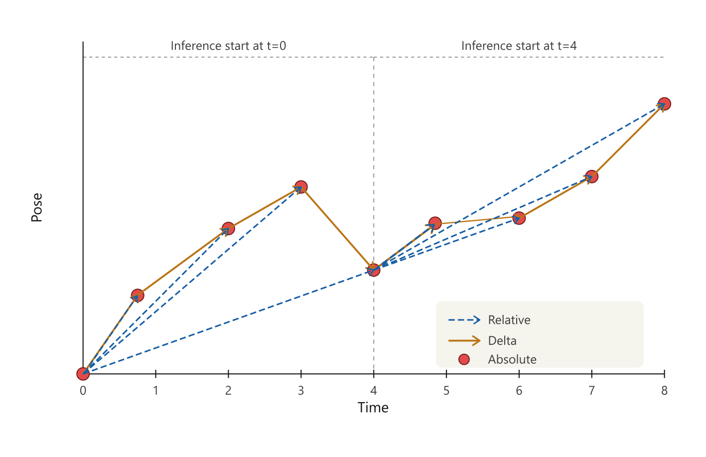

Relative position control
Relative positions are another way of representing actions which could be more beneficial for training, since they don't suffer as much from cumulating errors. In the figure below, the difference between delta positions and relative positions is visualized.

In order to use relative position, we need two processing steps:
- A processing step to create relative positions from a sequence of velocities
- A processing step to convert the relative positions back into velocities
Take note of the hooks where the processing steps are applied. To convert from velocity to relative pose, we are hooking into the GET_ITEM and GET_ITEM_VALIDATION hooks. The policy can then train on the relative pose computed for each batch sequence. After inference, we can convert the relative pose back to velocity commands in the POST_INFERENCE hook.
Creating and installing the extension
First we create an extension package for the processing steps:
source ~/incar/bin/activate
incar create_pkg --name my_extension --processing [path]
Then install the extension in editable mode, so we can hot reload it:
source ~/incar/bin/activate
pip install -e [path_to_package]
Processing step code
We can create a feature named [left/right].commands.arm.ee.relative_pose for the relative pose.
| [package_name]_processing/steps.py | |
|---|---|
1 2 3 4 5 6 7 8 9 10 11 12 13 14 15 16 17 18 19 20 21 22 23 24 25 26 27 28 29 30 31 32 33 34 35 36 37 38 39 40 41 42 43 44 45 46 47 48 49 50 51 52 53 54 55 | |
Make sure to import both classes in [package_name]_processing/__init__.py:
from .steps import VelocityToRelativePose, RelativePoseToVelocity
If you were already running the incar system, this requires a restart.
Using the processing steps
The policy config in the train config would then look as follows. Note that the velocity_to_relative_pose is executed during GET_ITEM, and the relative_pose_to_velocity is executed during POST_INFERENCE. Thus the model learns with relative pose, but the robot still receives cartesian velocity commands!
{
"policy": {
"input_features": {
...
},
"output_features": {
"left.commands.arm.ee.relative_pose": {
"type": "ACTION",
"shape": [6]
}
},
"preprocessing": {
"steps": [
...,
{
"type": "velocity_to_relative_pose",
},
{
"type": "relative_pose_to_velocity",
},
...
],
...
},
...
},
...
}